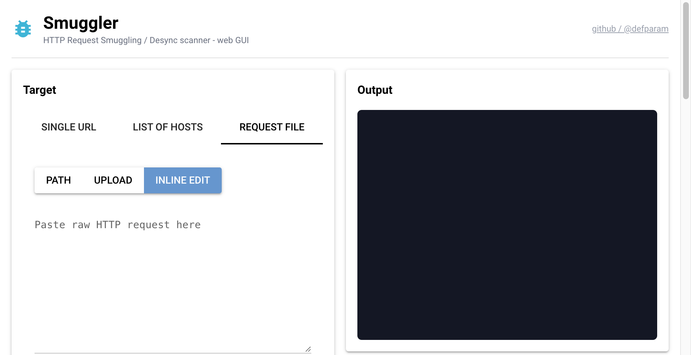

HTTP Request Smuggling,
made approachable.
An HTTP desync / request-smuggling testing tool in pure Python 3. Classic TE.CL and CL.TE detection backed by a timing oracle and a positive gadget probe, plus a stack of advanced scanners (CL.0, TE.0, pause-based, parser discrepancy, header removal, Expect, hop-by-hop, bare-LF chunked, connection-state, HTTP/2 downgrade) - and now an optional web GUI.
______ _
/ _____) | |
( (____ ____ _ _ ____ ____| | _____ ____
\____ \| \| | | |/ _ |/ _ | || ___ |/ ___)
_____) ) | | | |_| ( (_| ( (_| | || ____| |
(______/|_|_|_|____/ \___ |\___ |\_)_____)_|
(_____(_____|
@l0lsec v2.0
Built for finding real desyncs.
Every scanner in Smuggler pairs a timing/disconnect oracle with a positive confirmation probe (gadget surfacing, canary divergence, matched-pair comparison) so a finding has multiple signals behind it - not just a slow response.
Pure Python 3
No build step, no native deps for the core scanners. git clone and run. HTTP/2 support is a single optional pip install h2.
11 scanner classes
Classic TE.CL / CL.TE plus CL.0, TE.0, bare-LF chunked, pause-based, parser-discrepancy, header-removal, Expect, hop-by-hop, connection-state, and HTTP/2 downgrade - each with its own oracle.
Replay mode
Continuously replay a captured request, optionally interleaved with a baseline request for differential analysis. Live RPS, success/timeout/error counters, and request-ID tagging.
Confirmation-first
Timing anomalies are confirmed across multiple attempts and corroborated with positive gadget probes (e.g. surfacing a smuggled /robots.txt on a victim request) before being reported.
Web GUI
Optional NiceGUI frontend exposes every CLI flag, streams colorized output to your browser, renders live replay stats, and lists generated payload files for download.
Tooling-friendly
Burp-style raw request files, proxy support, custom cookies, persistent TCP connections, mutation configs (default.py, exhaustive.py, doubles.py, http10.py, chunkext.py), and a tested pytest harness.
Installation & quickstart
Clone the repo and you have the CLI. Install the requirements file to unlock the optional HTTP/2 scanner and the web GUI.
CLI core
$ git clone https://github.com/l0lsec/smuggler.git
$ cd smuggler
$ python3 smuggler.py -hWeb GUI optional
$ pip install -r requirements.txt
$ python3 webgui.py
# open http://127.0.0.1:8765Common invocations
# Default scan: TE.CL + CL.TE against a single URL
$ python3 smuggler.py -u https://target.com/
# Run every advanced scanner
$ python3 smuggler.py -u https://target.com/ --scan-type all
# Use a captured Burp request as a template (extracts host/method/cookies)
$ python3 smuggler.py -r request.txt
# Replay a smuggling POC continuously with a baseline diff
$ python3 smuggler.py -r poc.txt --baseline-request normal.txt --replay
# Pipe a list of hosts
$ cat hosts.txt | python3 smuggler.py
# Route everything through Burp
$ python3 smuggler.py -u https://target.com/ --proxy http://127.0.0.1:8080A web GUI for every CLI flag.
The optional webgui.py wraps the CLI as a subprocess, streams
its colorized output into your browser, and gives you a stop button -
without hiding any options or behavior.

- Three target modes: single URL, list of hosts (piped via stdin), or request file (upload, path, or inline edit).
- Full CLI parity - every flag from
--scan-typedown to--pause-timeoutis a form control. - Replay live stats: total / success / failed / timeout / error / RPS / baseline-ratio / latest request ID.
- Colorized output: smuggler's ANSI codes are rendered as styled HTML.
- Stop button sends SIGINT → SIGTERM → SIGKILL in a graceful ladder.
- "Copy command" surfaces the exact
python3 smuggler.py …invocation. - Built-in payloads browser with download links for any files produced by a CRITICAL finding.
127.0.0.1 by default.
Smuggler is an offensive scanner - do not expose webgui.py on a
public interface. The --public flag exists but prints a loud warning.
What each scanner actually does.
Every scanner pairs an anomaly oracle with a positive confirmation step. Confidence reflects the strength of the corroboration, not the severity.
| Attack class | --scan-type |
Oracle | Confidence |
|---|---|---|---|
| TE.CL / CL.TE | tecl, clte |
Timing anomaly + smuggled /robots.txt gadget surfacing on a victim request |
High when both fire |
| CL.0 / 0.CL | cl0 |
Pipelined victim observes the smuggled gadget (3-of-5 confirmations) | High |
| TE.0 | te0 |
Victim observes the smuggled prefix after a zero-chunk terminator | High |
| Bare-LF / Bare-CR chunked | bare-lf |
Pipelined victim observes the smuggled prefix when framing uses bare LF/CR | High |
| Pause-based desync | pause |
Send headers, pause N seconds, send body; pipelined victim observes the gadget | Medium-high |
| Connection-state attack | connection-state |
Pipelined bad-Host returns a different status than on a fresh connection |
Medium |
| Parser discrepancy | parser-discrepancy |
Technique alone matches baseline, but the canary diverges | Medium-high |
| Header removal (Keep-Alive) | header-removal |
Matched-pair comparison of harmless vs attack request (3-of-5) | Medium-high |
| Expect-based desync | expect |
Multiple Expect variants pipelined with a victim; same gadget oracle as CL.0 |
High when confirmed |
| Hop-by-hop auth bypass | hop-by-hop |
Baseline vs Connection: <header> probe; status flip confirmed 2-of-3 |
High when reproducible |
| HTTP/2 downgrade | h2 |
Send H2 attack stream, then open a parallel H1 connection; flag if victim sees gadget | High |
Request file modes - they aren't interchangeable.
A surprising fraction of "Smuggler says OK but Burp shows desync" reports come from
pasting a smuggling POC into -r without --replay. Here's the
mental model.
Scan mode (default -r)
The request file is a template. Smuggler extracts method, endpoint, host, and cookies, then synthesizes its own smuggling payloads from your chosen config. Body bytes and embedded request lines are ignored. Use req_clean.txt.
Replay mode (-r --replay)
The request file is sent verbatim, looping until you stop. Pair with --baseline-request to interleave a clean request for differential analysis. This is what you want for POC-shaped files like req_poc.txt.
Notice: line when a
-r file (without --replay) contains body bytes or embedded request lines.
Pick the depth of your TE/CL fuzzing.
Configs control which header mutations the classic TE.CL / CL.TE scanners
try. They are Python files in configs/ that you can read and edit.
# Faster, smaller mutation set (default)
python3 smuggler.py -u https://target.com/ -c default.py
# Wider mutation surface, slower
python3 smuggler.py -u https://target.com/ -c exhaustive.py
# Niche: doubled headers, chunk-extensions, HTTP/1.0 quirks
python3 smuggler.py -u https://target.com/ -c doubles.py
python3 smuggler.py -u https://target.com/ -c chunkext.py
python3 smuggler.py -u https://target.com/ -c http10.pyexec()'d in the same process as Smuggler.
Only load configs you trust - they have full process privileges.